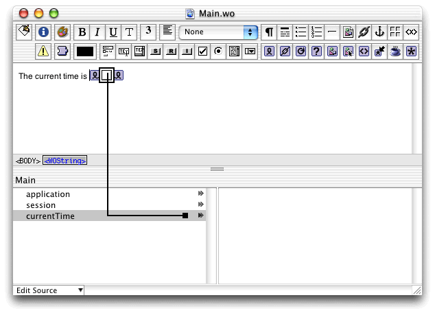

| PATH |

By default, every WebObjects application includes a Main component. This component, initially empty, is the first page displayed to users unless you arrange otherwise. It can be used as the login page for the rest of your application.
The initial Main component is entirely empty. In this section, you add a method that calculates the date to the Java class, add a WOElement to the page, and use the WOD file to bind it all together.
First, you add a Java method to the Main.java file.
This method simply returns the current date when it is called.
For details on how to create a new project see "Hello WebObjects".
Main.java from
the Groups & Files list in Project Builder's main window.public NSTimestamp currentTime() {
// by default, a new NSTimestamp object is initialized
// to the current date and time
return new NSTimestamp();
}Notice that the Main class inherits from WOComponent.
The WOComponent class defines dozens of methods needed by WebObjects. Many of these methods are introduced later in this book.
Main.java file
by choosing File > Save.To display dynamic text, you add a WebObjects element to the Main component. This element is the WOString, which is used to display dynamic string data in a page. Such strings can be the output of a Java method that returns a String object or another object that can be converted to a String object.
Main.wo in Project
Builder.Enter "The
current time is " in the content editor
in WebObjects Builder's main window.
With the cursor at the end of the new text, press the Space bar and click .
Select the WOString element and click . The WOString Binding Inspector appears.
If the Inspector appears, but doesn't look like the one shown, click the WOString you just inserted. The Inspector displays information about the element that is currently selected.
The Inspector displays the attributes for WOString elements. Each of them can be set, either to static values or by binding them to instance variables or methods in your code, which provide a value at runtime.
Notice
that the value attribute
is displayed in red. This means that this binding is required. In
this case, the value attribute's
binding produces the text that the WOString displays, and the other
attributes affect how the string is displayed. You use this WOString
to display the current time.
value attribute
to the currentTime method.Notice
that the name of the currentTime method
you entered in Main.java is
listed in the Main list, in the bottom-left corner of the Main.wo window.
Drag
a connection from the currentTime method
to the WOString element in the content editor.

While
WOString has several attributes, WebObjects Builder assumes you
want to bind the value attribute
because it's the one most commonly used in WOStrings.
Main.wo.The currentTime method is now bound
to the WOString on the page. This connection is recorded in the
WOD file. See Listing 4-1.
© 2001 Apple Computer, Inc.